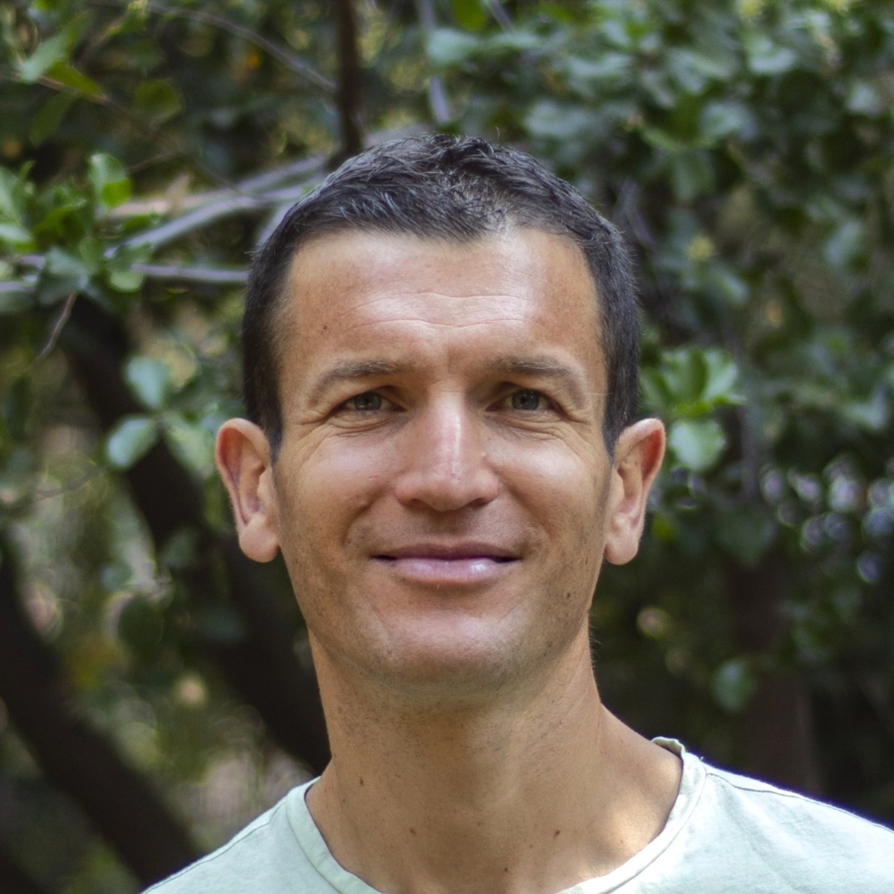
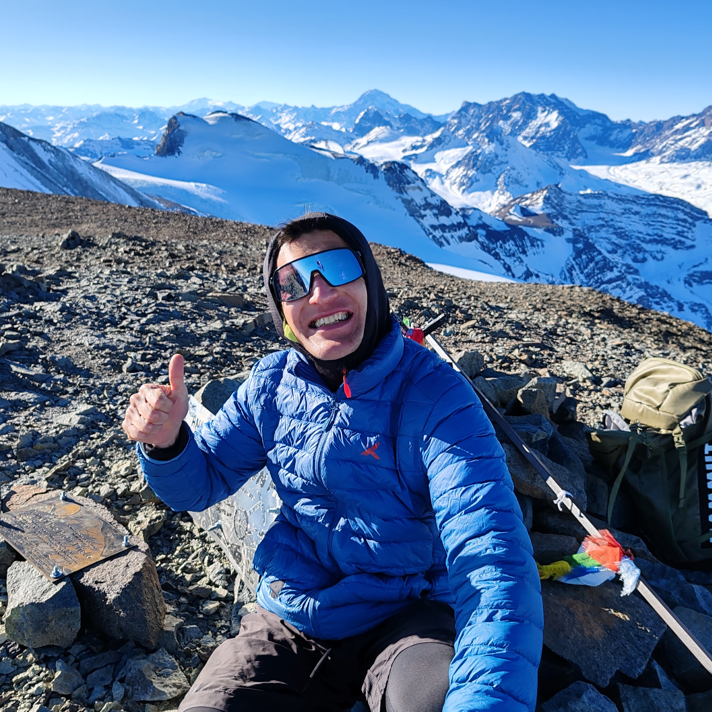
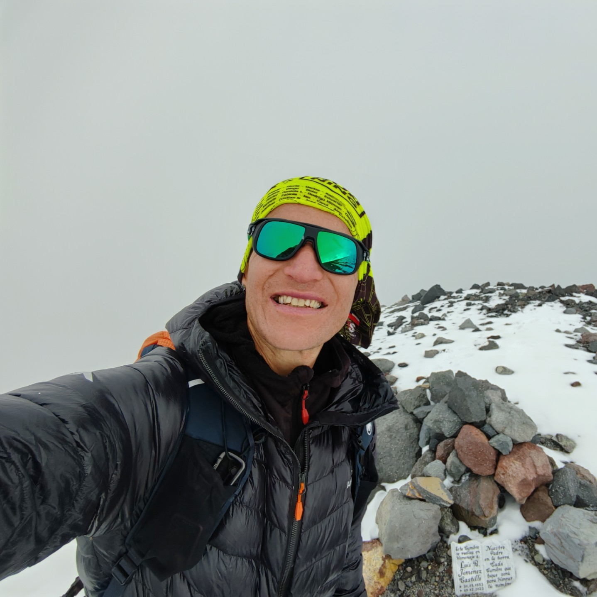
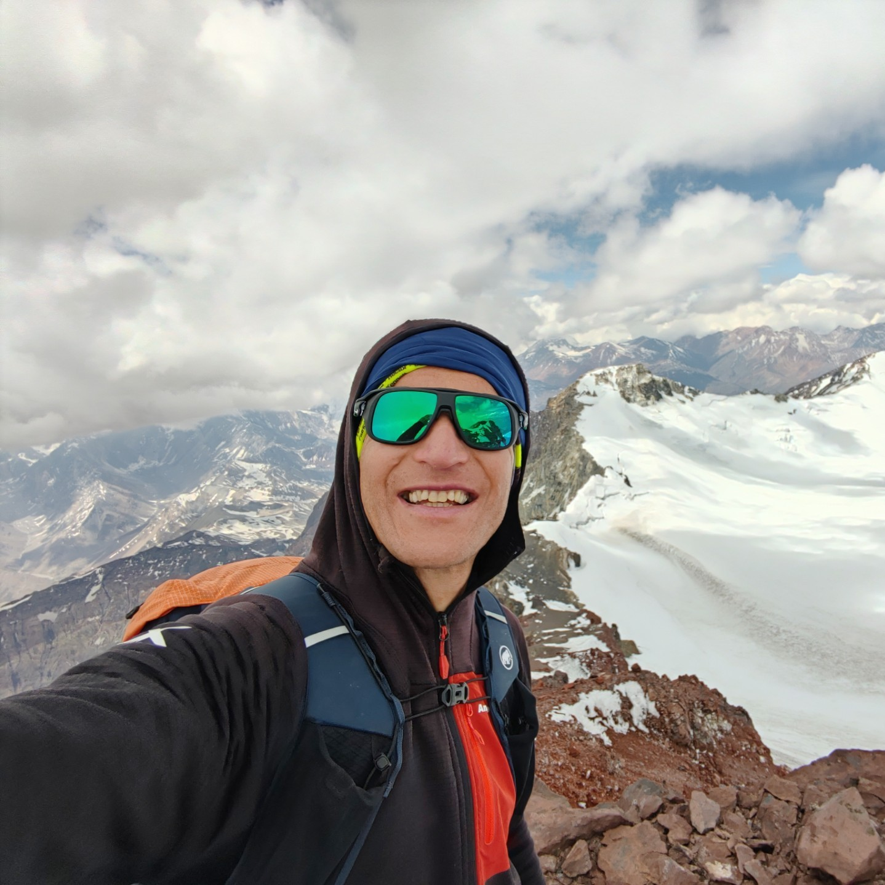
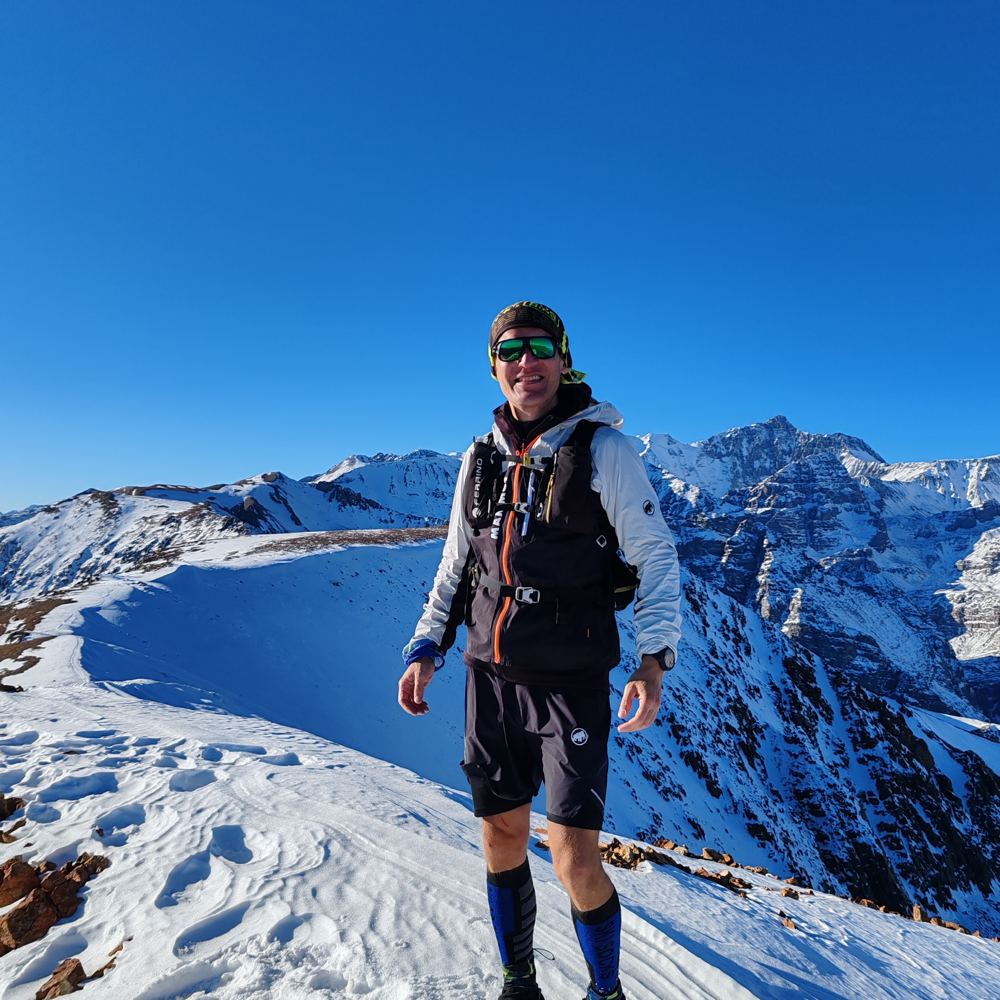

José Manuel
Cartes Urzúa
Fundador del Preuniversitario JMC - Profesor, Ingeniero Civil UC y Montañista
Fundador del Preuniversitario JMC - Profesor, Ingeniero Civil UC y Montañista

Ingeniero Civil UC • Profesor • Montañista
Mi nombre es José Manuel Cartes Urzúa, soy profesor, ingeniero Civil UC y montañista, además de un ser humano creyente en Dios. Cuento con más de 18 años de experiencia en aula como profesor del Colegio Epullay Montessori y de mi preuniversitario.
Dentro de mis años en el mundo de la educación, he sido testigo de que el ser humano tiene un potencial infinito para crecer, aprender y contribuir a los demás. Cada persona, si desarrolla con perseverancia y amor sus talentos únicos, puede construir un proyecto de vida realmente valioso y aportar en la creación de un mundo mejor.
Mi compromiso es dar lo mejor que tengo como persona y como profesional, para que cada estudiante que trabaje conmigo desarrolle su máximo potencial en el área matemática, pero también potencie su disciplina, autoconfianza y valores que le permitan convertirse en un mejor ser humano.
Docencia en matemáticas con metodología Montessori para enseñanza media. Desarrollo de habilidades matemáticas y formación integral de estudiantes.
Creación y publicación de texto de estudio propio, desarrollado específicamente para estudiantes chilenos de enseñanza media.
Creación y dirección del preuniversitario personalizado con metodología propia enfocada en grupos pequeños y atención individualizada.
Liderazgo en fundación educacional comprometida con la excelencia académica y desarrollo de políticas educativas.
Promoción del deporte y vida saludable a través del running y montañismo en la comunidad.
Cada ser humano cuenta con un potencial enorme para crecer, aprender y contribuir a los demás cuando desarrolla sus talentos únicos.
Desarrollo no solo de habilidades académicas, sino también de disciplina, autoconfianza y valores para ser mejores seres humanos.
Acompañamiento en la construcción de un proyecto de vida valioso que permita aportar positivamente al mundo.
"El niño, guiado por un maestro interior, trabaja infatigablemente con alegría para construir al hombre."
Si bien el mundo de la educación es mi trabajo y vocación, también he encontrado en el mundo de la montaña una manera de conectarme con la maravilla de la creación, visitar lugares maravillosos, crecer como ser humano y entender que, si bien nuestro paso es breve, podemos experimentar momentos realmente sublimes.
Varias ascensiones invernales, incluyendo una trotando desde Plaza de Armas en 13h 39min.
Récord de ascenso en 5h 48min y récord global con 9h 37min desde base hasta cumbre.
3 cumbres alcanzadas con récord de ascenso en 11h 51min, demostrando constancia y resistencia.
Momentos capturados en las cumbres más desafiantes de la cordillera




Agenda una entrevista personal con José Manuel Cartes
CONTÁCTANOS